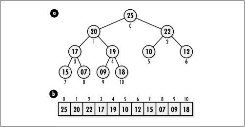

10.1 Description of Heaps
A heap is a tree, usually a binary tree,
in which each child node has a smaller value than its parent.
Thus, the root node is the largest node in the tree. We may
also choose to orient a heap so that each child node has a
larger value than its parent. In this case, the root node is
the smallest node. Trees like these are partially
ordered because, although the nodes along every branch
have a specific order to them, the nodes at one level are not
necessarily ordered with respect to the nodes at another. A
heap in which each child is smaller than its parent is top-heavy.
This is because the largest node is on top (see Figure
10.1). A heap in which each child is larger than its
parent is bottom-heavy .
Heaps are
left-balanced (see Chapter
9), so as nodes are added, the tree grows level by level
from left to right. A particularly good way to represent
left-balanced binary trees, and therefore heaps, is to store
nodes contiguously in an array in the order we would encounter
them in a level traversal (see Chapter
9). Assuming a zero-indexed array, this
means that the parent of each node at some position i in the array is located at position
(i - 1)/2, where means to
ignore the fractional part of (i - 1)/2. The left and right children
of a node are located at positions 2i + 1 and 2i + 2. This organization is
especially important for heaps because it allows us to locate
a heap's last node quickly: the last node is the rightmost
node at the deepest level. This is important in implementing
certain heap operations.

|